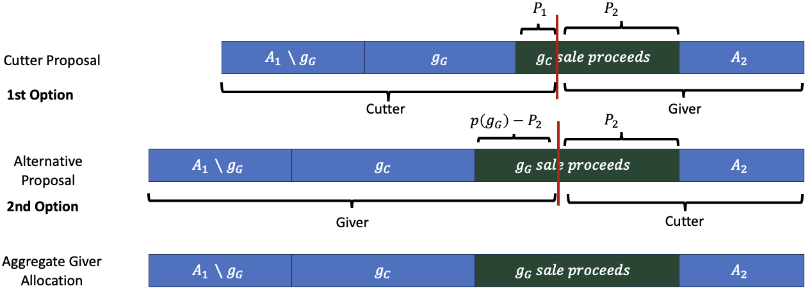

Aristotle, an autoformalization system, produced a Lean 4 formalization of the manuscript's results, released in a public GitHub repository.
Abstract
We consider fair allocation of indivisible goods in a setting in which agents have subjective valuation functions over the set of goods, and in addition, goods may be sold at given market prices. In this setting, a fair allocation involves {deciding which goods to sell, how to allocate the unsold goods, and how to divide the money received from the sold goods.} We adapt to this setting the definitions of share-based fairness notions, such as the maximin share (MMS) and the truncated proportional share (TPS), and comparison-based fairness notions such as EF1 and EFX (which we adapt to SEF1 and SEFX). We show the following results when the utility of each agent is additive both over goods and over money. With two agents, there are allocations that are simultaneously MMS and SEFX. With three agents, there are instances in which no allocation gives every agent more than $\frac{11}{12}$-MMS. With any number of agents, there are $\frac{2}{3}$-MMS allocations. There also are allocations that are simultaneously SEFX and $\frac{n}{2n-1}$-TPS. This latter ratio is best possible, even without the SEFX requirement.
Problem
The paper studies fair allocation of indivisible goods when goods can also be sold at market prices. A fair outcome must decide which goods to sell, how to allocate the unsold goods, and how to divide the proceeds. Share-based and envy-based fairness notions need to be adapted to this setting.
Approach
Maximin share (MMS), truncated proportional share (TPS), EF1 and EFX are redefined for this setting, the last two as SEF1 and SEFX, with utilities additive over goods and money. For two agents, a Cut & Give protocol, a variant of Cut & Choose, is used. Algorithms and counterexamples establish bounds for three agents and for general n. The Aristotle autoformalization system was used to proofread the paper and produce a Lean 4 formalization of the manuscript.

Figure 1: A visual proof for the n=2 MMS existence result, which follows the outline of the proof of Theorem 1.1 .
Results
For two agents, allocations exist that are both MMS and SEFX. For three agents, some instances allow no allocation better than 11/12-MMS, while 2/3-MMS is achievable for any number of agents. Allocations that are both SEFX and n/(2n-1)-TPS exist, and this TPS ratio is tight even without SEFX.
Setting
MMS n=2
MMS n=3
MMS n≥4
TPS (n≥2)
No Selling
1
[11/12, 39/40]
[7/9, 1-1/n^4)
n/(2n-1)
With Selling
1
[3/4, 11/12]
[2/3, 1-1/n^4)
n/(2n-1)
Share approximation results with and without selling